Nie wiesz, od czego zacząć
Masz pomysł na zagłówek lub puf, ale potrzebujesz uporządkować etapy przed rozpoczęciem pracy.
✧ PAKIET SKARBIEC TAPICERA
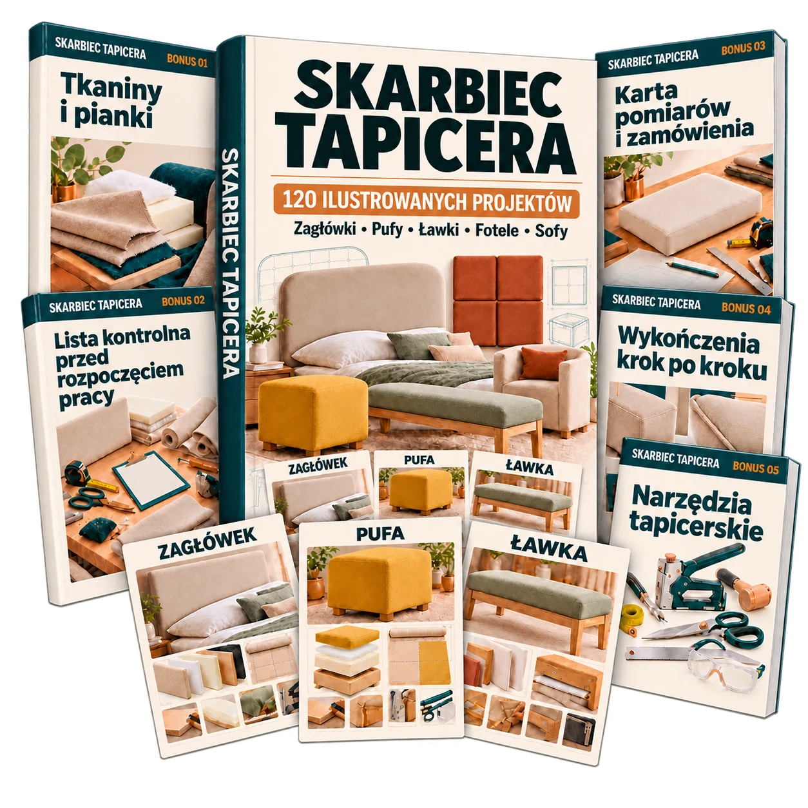
Wizualna pomoc w planowaniu i wykonywaniu zagłówków, puf, ławek oraz innych elementów tapicerowanych: listy materiałów, wymiary orientacyjne, etapy pracy i wskazówki dotyczące wykończenia.
✧ Materiały cyfrowe po polsku · Bez produktów fizycznych
BRZMI ZNAJOMO W TWOIM WARSZTACIE?
Chcesz tworzyć więcej, ale przed rozpoczęciem projektu pojawiają się takie pytania.
Masz pomysł na zagłówek lub puf, ale potrzebujesz uporządkować etapy przed rozpoczęciem pracy.
Chcesz zaoferować klientom większy wybór, ale wracasz do modeli, które już znasz.
Zanim kupisz tkaninę lub piankę, potrzebujesz punktu odniesienia do przygotowania i sprawdzenia listy materiałów.
Przeglądasz zdjęcia i rozproszone notatki, zamiast mieć najważniejsze informacje na jednej karcie.
Przy narożnikach, szwach i ostatnich poprawkach chcesz wiedzieć, co sprawdzić przed oddaniem pracy.
Przy każdym zamówieniu od nowa zbierasz wymiary, materiały i etapy, bez wizualnego punktu wyjścia.
Pomysły i materiały, które pomogą Ci lepiej planować
projekty tapicerskie w warsztacie.
Zagłówki, pufy, ławki, panele i inne projekty do dopasowania do potrzeb Twojego warsztatu.
Poznaj kształty, proporcje i wykończenia dzięki ilustracjom objaśniającym.
Widoki i wymiary orientacyjne pomagające zrozumieć projekt i dopasować go do potrzeb klienta.
Informacje orientacyjne o podstawach, wypełnieniach i warstwach poszczególnych projektów.
Listy materiałów i narzędzi pomagające zorganizować pracę przed jej rozpoczęciem.
Schematy krojenia i orientacyjne zapasy do sprawdzenia na rzeczywistej podstawie.
Ilustrowane etapy przygotowania, wypełniania, obijania i wykańczania elementu.
Punkty kontrolne dla narożników, naprężenia tkaniny i szczegółów wykończenia.
Przeglądaj materiały na telefonie, tablecie lub komputerze albo je wydrukuj.
Wizualne karty projektów z ilustracjami, wymiarami orientacyjnymi,
materiałami i etapami tapicerowania do wykorzystania w warsztacie.
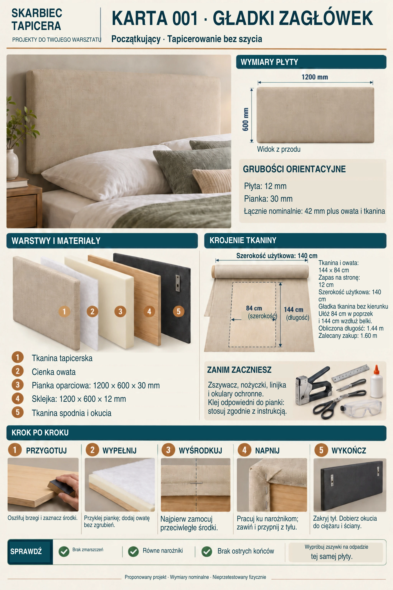
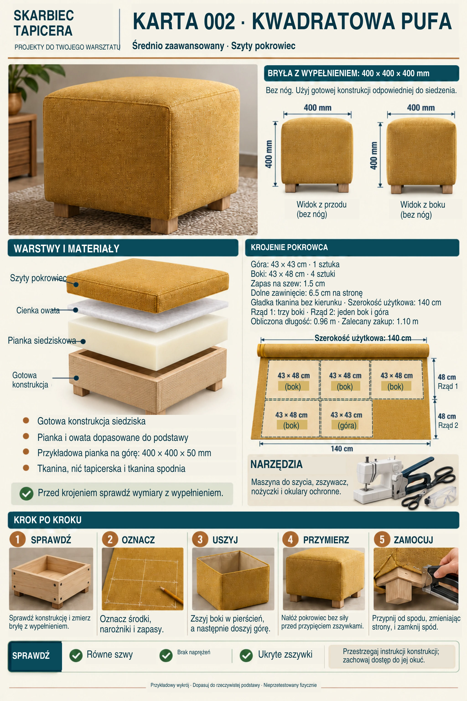
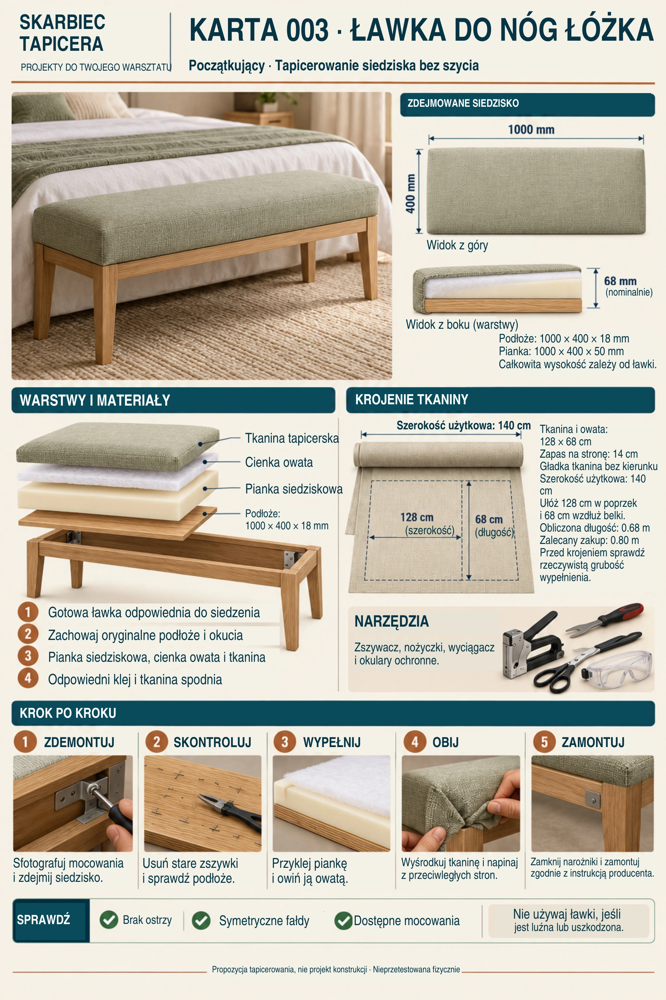
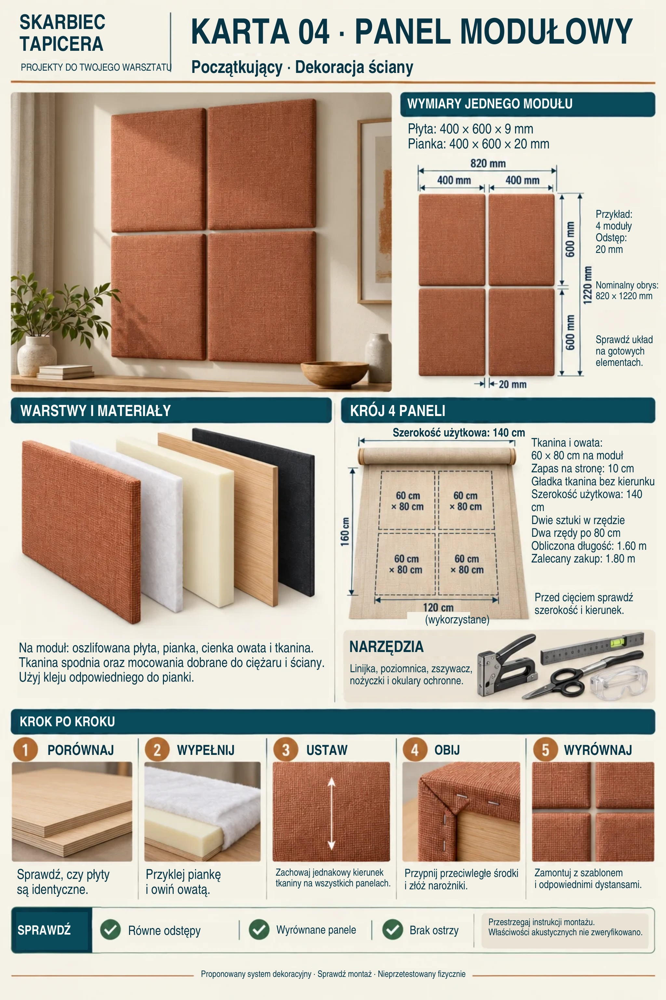
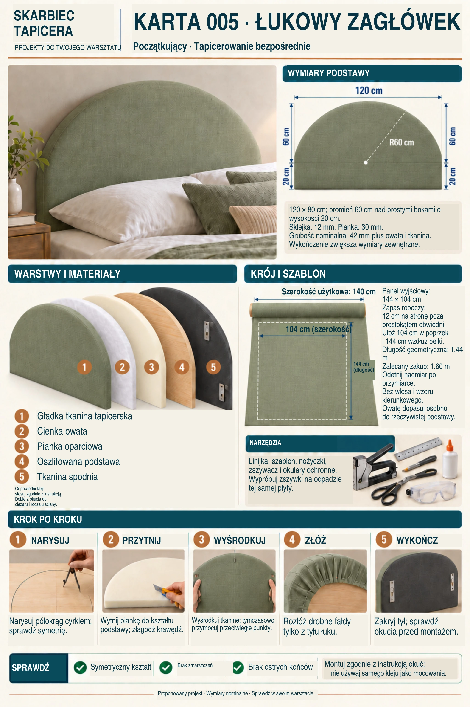
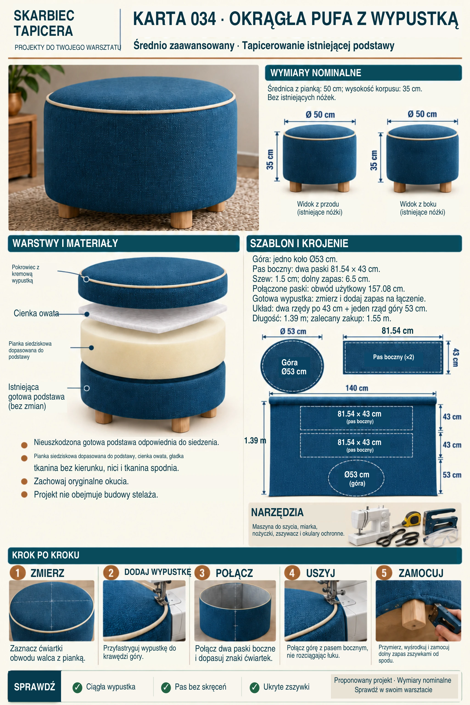
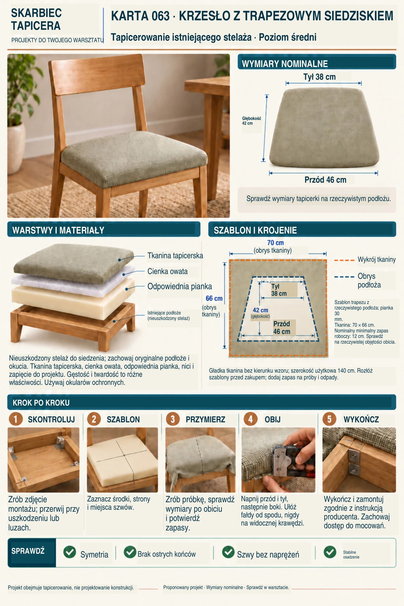
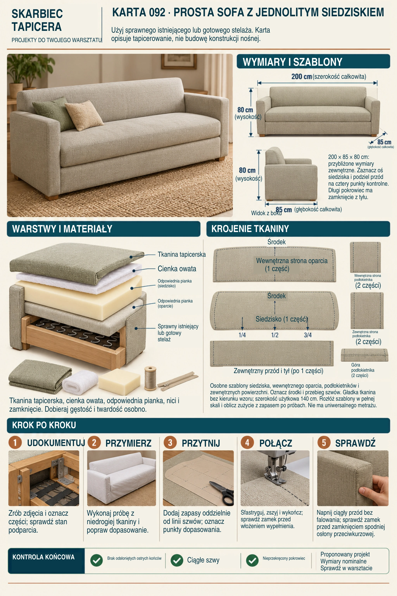
Oprócz projektów kolekcja zawiera pięć materiałów
pomocnych w przygotowaniu i organizacji pracy.
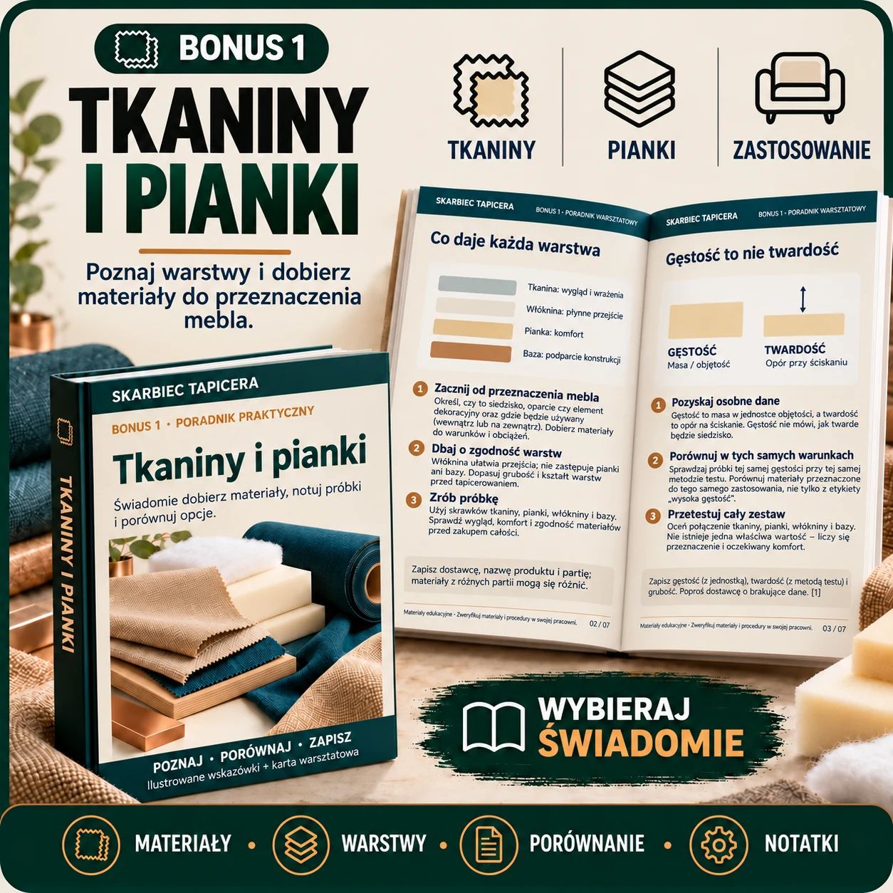
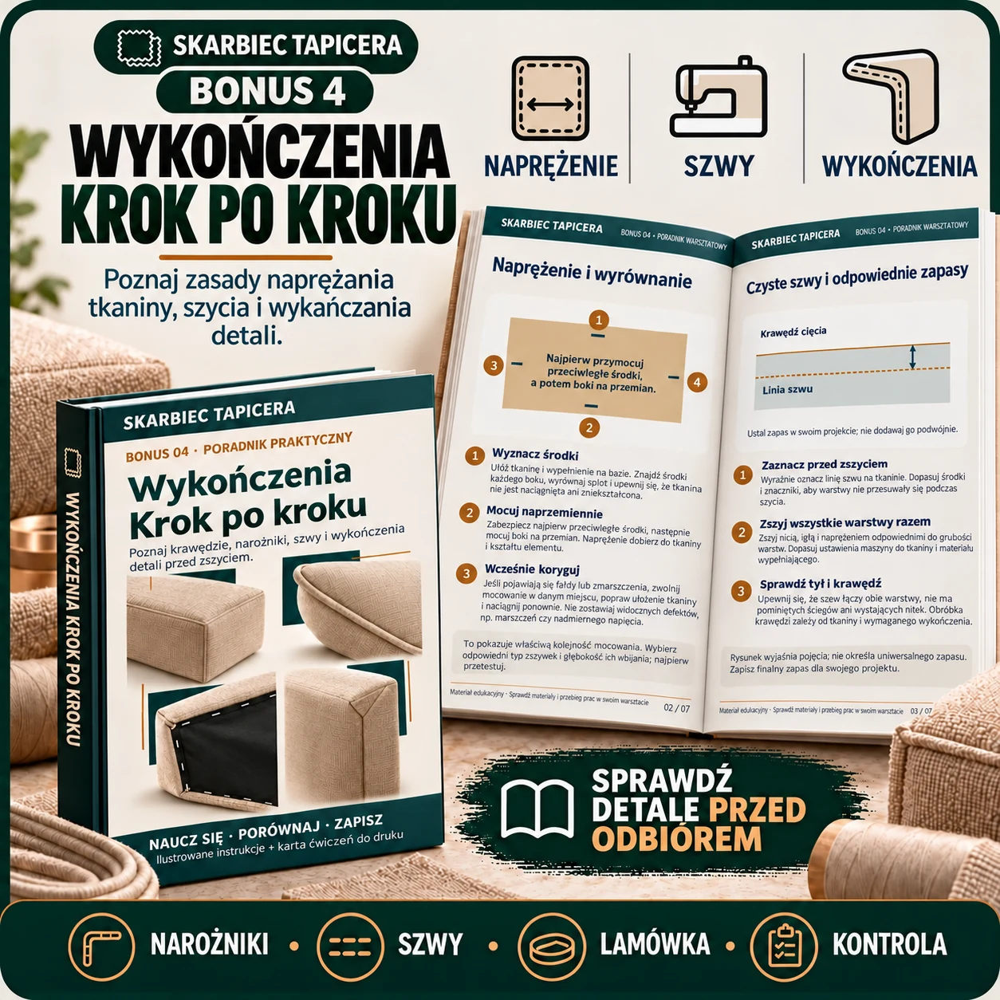
120 projektów + 5 dodatków w jednym kompletnym pakiecie.
✧ TWOJA KOLEKCJA WARSZTATOWA W JEDNYM PAKIECIE
Wszystkie 120 projektów tapicerskich po polsku oraz 5 dodatków.
Jeden kompletny pakiet.
Pełna kolekcja i wszystkie pięć materiałów dodatkowych.
120 projektów + 5 dodatków · Dodatki bez dopłat
Masz 7 dni od zakupu na zapoznanie się z materiałami. Jeśli nie spełniają Twoich oczekiwań, w tym terminie możesz poprosić o zwrot za pośrednictwem platformy zakupu.
Odpowiedzi dotyczące materiałów i korzystania z nich
przed wyborem kolekcji.
W pakiecie otrzymasz 120 projektów tapicerskich i pięć dodatków: tkaniny i pianki, przygotowanie pracy, pomiary i zamówienia, wykończenia oraz narzędzia. Wszystko w jednym pakiecie.
To cyfrowa kolekcja PDF, a nie książka fizyczna. Po potwierdzeniu płatności postępuj zgodnie z otrzymanymi instrukcjami dostępu.
Tak. Możesz analizować projekty i dopasowywać je do wymiarów, tkanin oraz potrzeb klienta. Przed wykonaniem zawsze sprawdź rzeczywistą podstawę i przygotuj próbki.
Nie. Są to propozycje projektów z ilustracjami objaśniającymi i wymiarami orientacyjnymi. Wymiary, krojenie i materiały należy zweryfikować w warsztacie. Ilustracje nie są zdjęciami przetestowanych mebli.
Nie. Głównym tematem jest tapicerowanie. Niektóre projekty wymagają odpowiednich gotowych lub istniejących podstaw. Materiały nie zastępują projektu konstrukcyjnego ani nie potwierdzają nośności.
Projekty mają różny poziom trudności. Zacznij od prostszych i używaj odpowiednich narzędzi zgodnie z zasadami bezpieczeństwa. Bardziej złożone modele wymagają doświadczenia. Rezultaty i dochody nie są gwarantowane.
Miej pod ręką wizualną bibliotekę pomysłów tapicerskich
do analizowania i dopasowywania do prac w warsztacie.